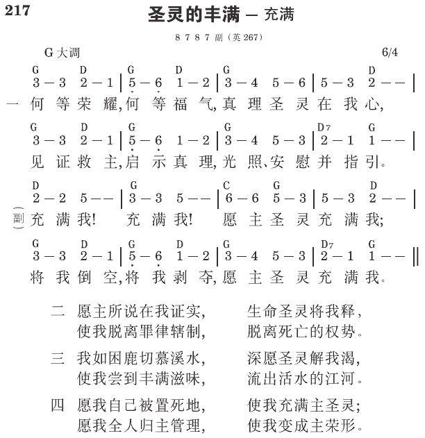

徒2:2 忽然从天上有响声下来，好像一阵暴风刮过，充满了他们所坐的整个屋子。
弗5:18 不要醉酒，醉酒使人放荡，乃要在灵里被充满。
在灵里被充满的意义
人的灵比人的体更重要，因此以弗所五章十八节说，“不要醉酒，醉酒使人放荡，乃要在灵里被充满。”我们需要被基督充满，成为神一切的丰满（一23，三19）。今天基督一切的丰富，就在赐生命的灵里；因此，在我们的灵里被充满，乃是被素质的灵充满；素质的灵就是赐生命的灵，也就是约翰十四章十七节所说，作基督实化的实际之灵。
以弗所三章十七节说，基督要安家在我们心里；这就是素质的灵在我们灵里，把我们完全充满；然后基督这位三一神的具体化身，就要占有我们的心，安家在我们心里。当我们在经历一面，灵里充满了素质的灵，就是三一神的终极完成，我们的心也完全被基督这三一神的具体化身所占有、得着、安家，结果我们就完完全全被三一神所充满并占有。这就是圣灵充满的意义。
借着彻底的祷告并认罪
我们如何能被三一神充满？乃是借着彻底的祷告并认罪。奉献的祷告虽然好，但最宝贵的，还是你在百忙中，找出一段时间，个人跪到主面前去，有一个彻底认罪的祷告。开头你可以向主说，“主啊，赦免我，虽然我所有的罪你都赦免了；但得救到今天，我从来没有这么一次彻底的认罪，也从未这么彻底的对付。今天我愿意把我所有的罪，在你面前彻底的承认一次，把我所有的罪都承认出来。求你光照我！”
你祷告时，不要寻求感觉。你要信主的灵与你同在；你不必按着次序，只要照着你里面所觉得的，或照着你的记忆，一件一件的向主认罪，直到你从感觉、记忆里再无可认为止。然后你应该相信，就在这时，你灵里已被三一神终极的完成所充满 （《作主合用的器皿》一一八至一二一页）。
操练整天呼求主、说主
早晨一起来，最好不想别的事，只想主耶稣！这件事说起来容易，作起来不简单。因为我们都有许多事充满我们的心。虽然如此，我们还得操练。早上先喊主的名再下床，然后在这一整天，一直学习说主。没有人在你跟前，你就喊主耶稣；有人在你跟前，你就说主耶稣。结果你所呼吸的是主耶稣，所说的也是主耶稣，你定规被三一神，就是那灵充满。这是很平常的事，这应该是我们每一天正常的生活（《关于生命与实行的信息》八八至八九页）。
不销灭那灵
被圣灵充满后，我们还得作几件事，以维持圣灵的充满。首先，我们不可销灭那灵（帖前五19）。那灵使我们的灵火热（罗十二11），并使我们的恩赐如火挑旺（提后一6）。所以我们不该销灭祂。
不叫圣灵忧愁
第二，我们不可叫圣灵忧愁（弗四30）。叫圣灵忧愁，就是使祂不喜悦，在日常行事中不照着灵而行（罗八4）。我们如何能知道圣灵忧愁？这可从我们的生活得到验证。你基督徒的生活不喜乐，就是圣灵在你里面忧愁的记号。因为圣灵在你里面忧愁，所以你不喜乐；如果你喜乐了，就指明圣灵在你里面也喜乐。有的姊妹见证，她们祷告到一个地步，觉得全人舒爽、轻快，真是喜乐；这就证明圣灵在她们里面是喜乐的。所以不要叫圣灵忧愁，就是不要叫你们自己忧愁。
顺从圣灵
第三，在积极方面，你们要顺从圣灵。彼得在行传五章说，“神赐给顺从之人的圣灵。”（32）指明这位圣灵乃是叫人顺从的。顺从乃是我们享受圣灵的道路和条件。罗马八章四节也说，我们要“不照着肉体，只照着灵而行”。这就是被充满的路，也是维持自己活在圣灵之充满里的条件。我们不仅要研读这些经节，更要在日常生活中实际的实行 （《作主合用的器皿》一六四至一六五页）。
参读：《作主合用的器皿》第七、十、十二篇；《关于生命与实行的信息》第九、十二篇。
